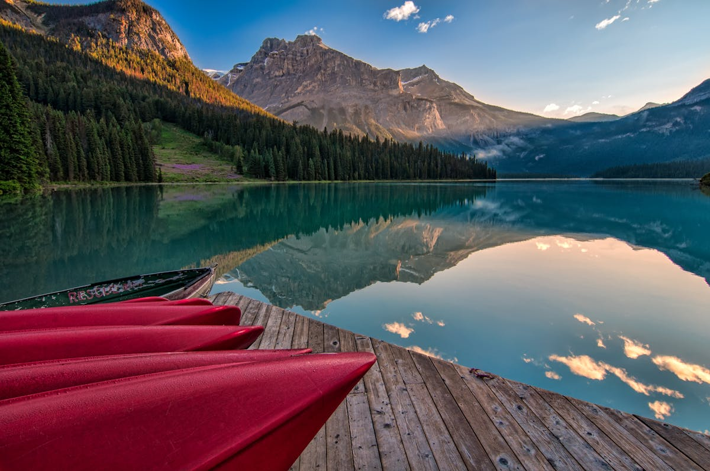

Our Leadership

The firm is led by John Dunn, a chartered surveyor whose career in Scotland spans more than three decades.
Professional Experience
With over 30 years of experience in the Scottish property market, John brings a wealth of knowledge in asset management and strategic investment.
Investment Philosophy
Guided by principles of diligence and long-term stewardship, placing enduring value and community respect above short-term gains.
Rooted in Edinburgh, his leadership defines the disciplined approach that is the hallmark of Dunross.